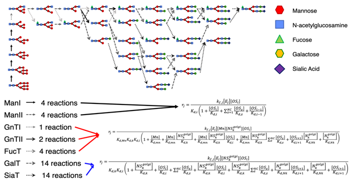

N-linked Glycosylation Simulation
High Level Model Overview
The glycosylation model is based on the cisternal maturation assumption with recycling of Golgi resident proteins first proposed by Jimenez del Val et al. (2011). The mass balances for the species involved were calculated considering the Golgi apparatus as a single plug flow reactor operating at steady state according to equations (11)-(13) and the reaction scheme reported in the figure below. The effect of the operating conditions on N-glycosylation was simulated by linking the kinetics of enzymatic reactions to the availability of sugar precursors, and the concentrations of metal ions and ammonia.

Model Description
Mass balance equations for the unstructured cell culture model and the mechanistic glycosylation model adapted from Karst et. al. (2017). The modeling framework can be divided in two sections. The first part comprises a simple unstructured cell culture model for the estimation of cell specific parameters (e.g., growth rate, ammonia and antibody specific productivities) and process related values (e.g., bleed rate). The mass balances of the perfusion bioreactor are based on the assumption of a CSTR reactor (e.g., perfect mixing).

Reference: Karst, D. J., Scibona, E., Serra, E., Bielser, J. M., Souquet, J., Stettler, M., … & Villiger, T. K. (2017). Modulation and modeling of monoclonal antibody N‐linked glycosylation in mammalian cell perfusion reactors. Biotechnology and bioengineering, 114(9), 1978-1990.
Kinetic Reaction Network: column (reactant), row (product), cell (enzyme)

Plantwise Simulation

Reference: Amos E. Lu, Joe A. Paulson, Nicholas J. Mozdzierz, Alan Stockdale, Ashlee N. Ford Versypt, Kerry R. Lov, J. Christopher Love, Richard D. Braatz (2015). Control Systems Technology in the Advanced Manufacturing of Biologic Drugs. CCA.
Bioreactor Kinetic Model
Harvest/Hold Tank Model
\(𝑋\): biomass
\(𝐹_𝑖𝑛\): inlet flow rate (L/h)
\(𝐹_𝑜𝑢𝑡\): outlet flow rate (L/h)
\(𝜇_𝑔\),\(𝜇_𝑚\): Specific growth rate
\(𝑆_{𝑖𝑛,𝑔}\): inlet glycerol concentration (g/L)
\(𝑆_{𝑖𝑛,𝑚}\): inlet methanol concentration (g/L)
\(𝑆_𝑔\): glycerol concentration (g/L)
\(𝑆_𝑚\): methanol concentration (g/L)
\(𝑞_{𝑆_𝑔}\),\(𝑞_{𝑆_𝑚}\): Specific rate of substrate consumption (g/g-h)
\(𝑞_{𝑃_𝑖}\): Specific product production rate (g/g-h)
\(𝑃_𝑖\): protein \(𝑖\)
\(𝑉\): bioreactor volume (L)
Chromatography Model
Mobile phase (lipid phase)
Nonideal transport model for the concentration of species \(i\)th species
The mass balance of salt whose concentration is denoted by \(𝐶_{𝑞 ğ‘ğ‘™ğ‘¡}\), is
Adsorbed (stationary) phase: the kinetics of the adsorption are
where \(C_i\) is the concentration of species \(i\) in the liquid phase, \(\theta\) is the dimensionless time, \(\epsilon_{tot}\) is the total porosity, \(z\in[0,1]\) is the dimensionless length, \(Pe\) is the Peclet number, \(q_i\) is the concentration of species \(i\) in the adsorbed phase, and \(\epsilon_pore\) is the particle porosity. \(k_{ads,i}\) is the rate constant of adsorption for component \(i\), \(Q\) is the number of ligands available for adsorption and desorption, \(v_i\) is the characteristic charge of component \(i\), \(k_{des,i}\) is the rate constant of desorption for component \(i\).
Reference: Sejergaard, L., Karkov, H. S., Krarup, J. K., Hagel, A. B. B., & Cramer, S. M. (2014). Model‐based process development for the purification of a modified human growth hormone using multimodal chromatography. Biotechnology Progress,30(5), 1057-1064.